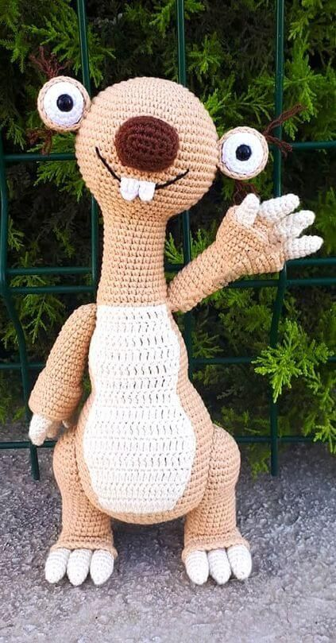
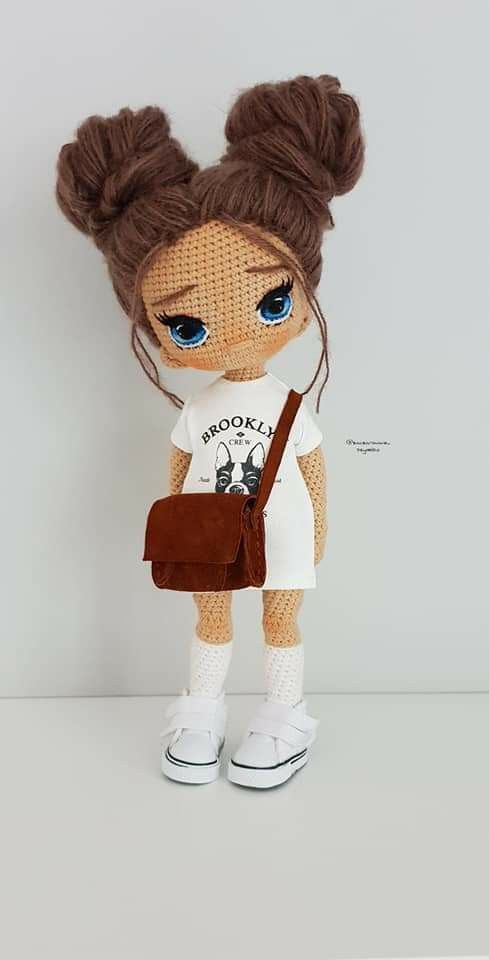
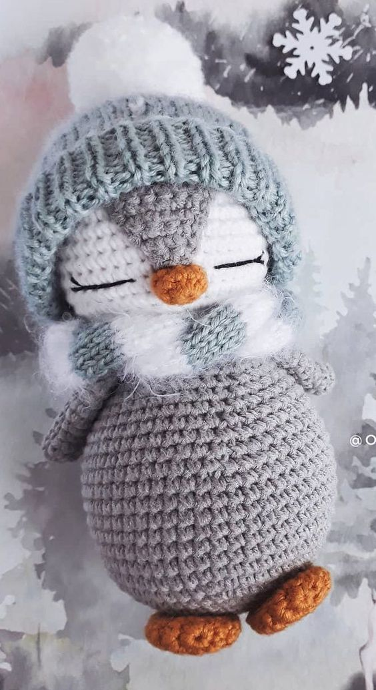
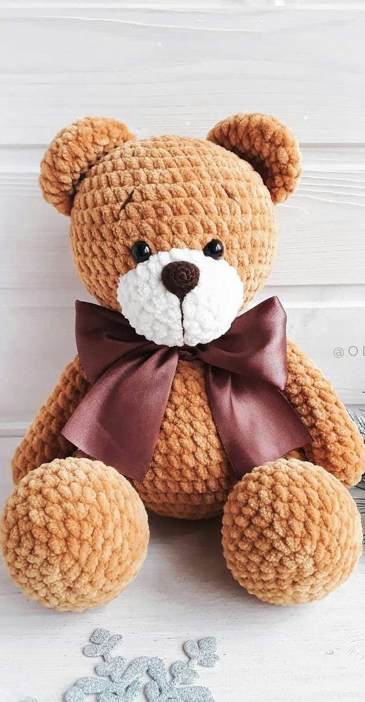
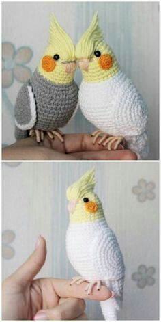
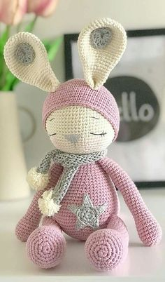

Amigurumi
Amigurumi (Japanese: 編みぐるみ, lit. "crocheted or knitted stuffed toy") is the Japanese art of knitting or crocheting small, stuffed yarn creatures. The word is a compound of the Japanese words 編み ami, meaning "crocheted or knitted", and 包み kurumi, literally "wrapping", as in 縫い包み nuigurumi "(sewn) stuffed doll". Amigurumi vary in size and there are no restrictions about size or look. While the art of amigurumi has been known in Japan for several decades, the craft first started appealing to the masses in other countries, especially in the West, in 2003. By 2006, amigurumi were reported to be some of the most popular items on Etsy, an online craft marketplace, where they typically sold for $10 to $100.
Gallery






Lesson
Pricing
Natural yarn
Plush yarn
Synthetic yarn